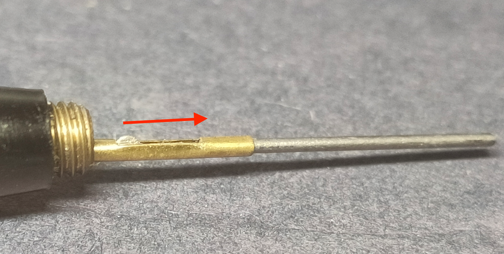
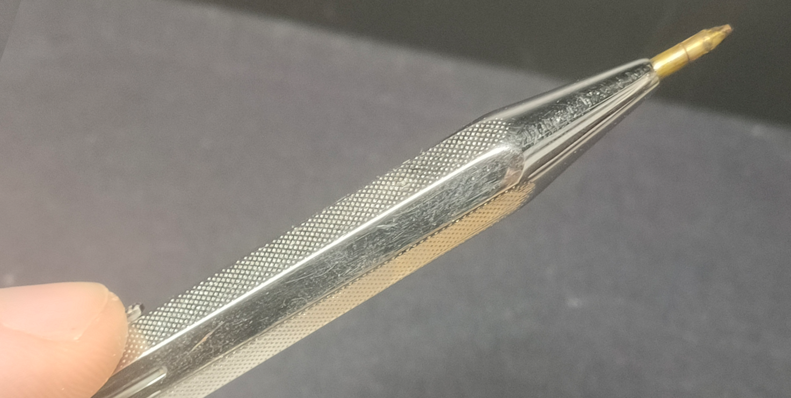
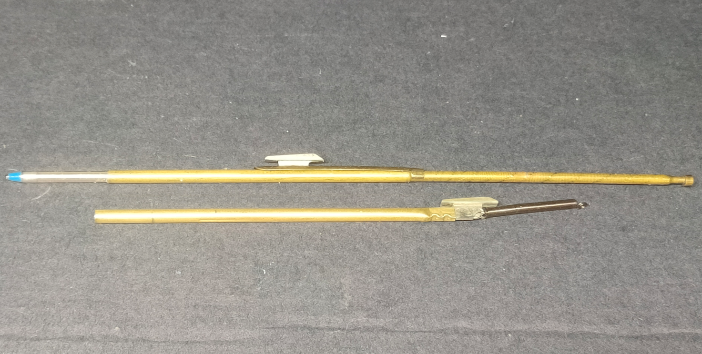
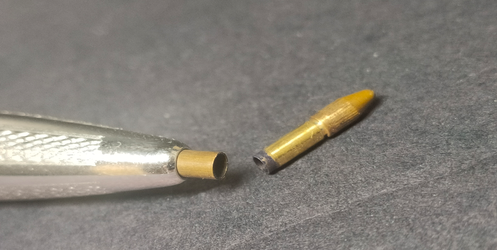
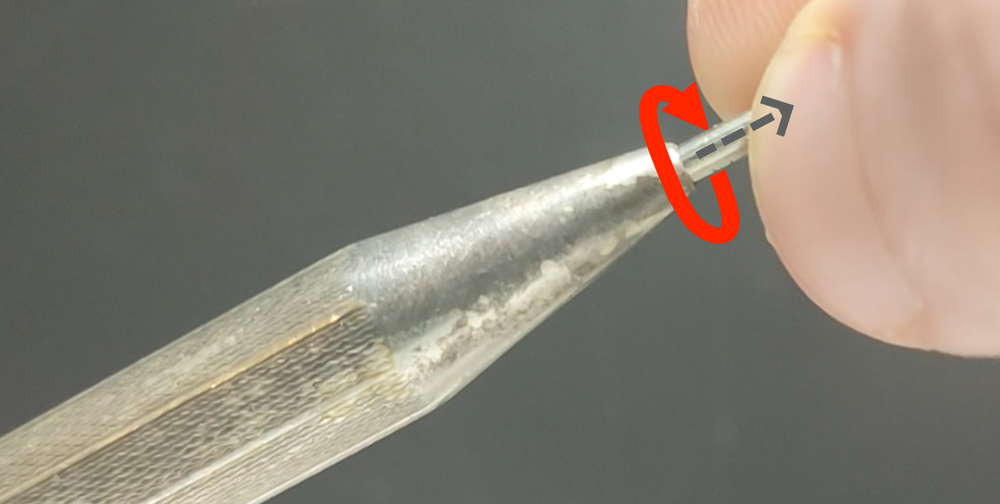
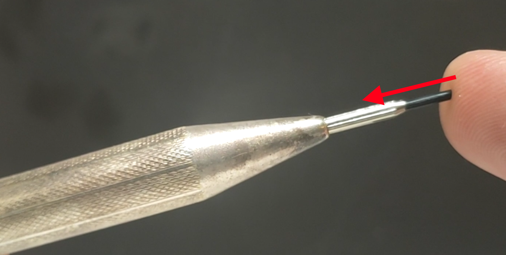

How do I replace the lead in my old multicolored pencils?
Instructions for refilling, replacing and removing various leads in old multicolored pencils. 4-color crayons, 4-color pencils, 4-color ballpoint pens, etc.
Stand: March 23, 2026
1.
if it's your penvisibly segmentedPlease try that firsthalf twist or pull apart. But only with moderate force.
If you can successfully loosen or pull the pin halves apart; Perhaps a multicolored ballpoint pen, or a ballpoint/mechanical pencil combination like a Chromatic or Zebrashabo.
mine will changeAs well as modern equivalentsAnd there's no need for explanation.

2.
Very old pen with cap rotating feed(i.e. turn on the knob at the back), Alternatively, older slider pins with continuous non-stop feed can also be opened this way.2mm colored pencil lead。
these areJust put it in the tube and pull it out, as was later done with ballpoint pen refills.
 2.a.
2.a.aspecial casesome arejapanese pen,linear"Escape aid"removal It's easy to do with my residue.

2.b.With other pens of this type, the lead may be accessible from the back, allowing the use of an aid. You can squeeze out the residue. If not, the only solution is to scrape it off, drill it, or soak it in warm water.
2.c.
However, not all pens with rotary feed can be opened. Next, you need to take a closer look at the pin opening.
To do this, you need to push the leash forward until you see the leash holder. For rotating pins, that means a lot of rotation.
If the lead holder enclosure is smooth and usually just slotted, perform the modification as in #2. In this case, turn the rotary knob to move the reed holder as far as possible. Or push the slider out of the writing opening.

3.
with penPush button, push cap, slider with locking mechanismIt usually has the following properties: A ballpoint pen is usually includedD1-boundand colored pencils1.18mm-MinenEquipped.
First, you need to bring the push button, push cap or slider as far forward as possible.
Some pens have additional lock levels for this purpose.
3.a.
If you don't see anything, it's probably a multicolored ballpoint pen., mine is missing.
Push the slider, snap, or cap all the way forward.
Next, take out the D1 ballpoint pen refill and carefully insert it into the writing opening. Unlike what I described in 2c, you have to proceed "blindly". pen. However, the tube can be easily felt. All you have to do now is push the wick further until only the tip of the wick pops out.


3.b.
Introducing ballpoint pen refillsThen, as I mentioned earlier, push the mine forward. Grasp as much of the leash as you can with your fingers or pliers and pull firmly. Sometimes a great deal of force is required. New mines are inserted as described above.

3.c.
danger! Not all pens have replaceable ballpoint refills.There are also disposable pens whose nib is firmly connected to the nib holder. So if you feel like you need to push too hard, here are some things to consider: Works as a disposable pen. In this case there is nothing you can do.
3.d.
A special case is an American Norma combination pencil with a ballpoint tip. It is removable. This is from a time when ballpoint pen refills were still available. Due to manufacturing costs, there were no disposable products.

3.e.
If a grooved shaft appears, it is a multicolored penciland A small rotating guide. Unlike ballpoint pens, you can not only see the refill; But so are their owners.





Small rotating guides are usually permanently installed.3.f.
However, there are also very rare variants that can be removed. All I know is in this In such cases, it is possible to replace it with a D1 refill, i.e. a refill holder and its refill. The receptacle diameter is the same as a comparable ballpoint pen. In this special case, the change process in the mine itself does not change anything.
If in doubt, check with your specific pen (there are many variations). Please send an email. I would appreciate it if you could return my pen. Make it functional.